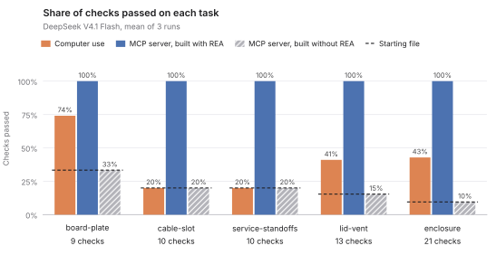
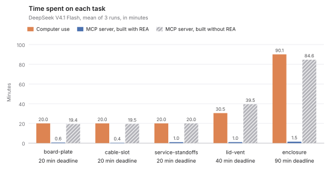
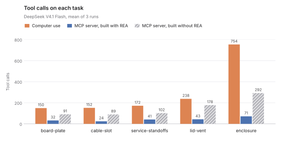
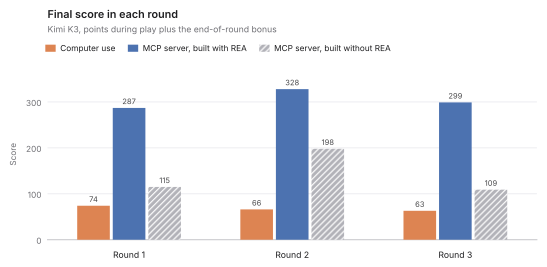
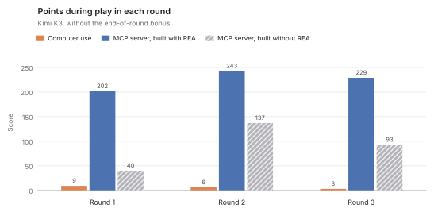

We give a language agent only the compiled binaries of a program and a reverse-engineering toolkit. The agent builds its own tools for the program. With these tools, it uses the program much better than the same model does by operating the screen. In FreeCAD, DeepSeek V4.1 Flash finished one task 54× faster and with 35× fewer tokens when it used the MCP server it built. Across five tasks it passed 100% of the checks with its MCP server and 40% with computer use. In Fruit Ninja, a closed-source real-time game, Kimi K3 averaged 305 points with its MCP server and 68 points with computer use.
With computer use, a language agent operates software the way a person does. It looks at screenshots and moves the mouse. This works on any program, but every step needs a new screenshot and a new model reply. Agents work better when a program offers tools that they can call directly, such as an MCP server (Song et al., 2024; Jia et al., 2025). So far, people have written these tools by hand or generated them from source code and documentation. For closed-source software, there is no source code to generate them from.
We ask whether an agent can build these tools itself when it has only the compiled binaries of the program. We give the agent REA, a reverse-engineering toolkit that can inspect binaries and instrument running processes. We do not give it source code, documentation or internet access. The agent studies the program and writes an MCP server for it. After that, the agent does its tasks through only this server, without using the screen, mouse or keyboard. We observed superior performance and call this blind computer use.
How an agent builds an MCP server from binaries
We give one agent session the binaries and REA in an offline sandbox, and ask it to build an MCP server. The agent builds the server in four steps (Figure 1):
- Analyze. The agent inspects the package and finds what the binaries expose.
- Test. The agent runs the program and tries its guesses on it.
- Build. The agent writes the MCP server.
- Check. The agent runs the server against the program. If a check fails because of a bug in the code, the agent goes back to step 3 and fixes the code. If the failure raises a new question about the program, the agent goes back to step 2 and tests it.
We do not show the agent the benchmark tasks, so the agent has to decide by itself which operations the server should offer.
What does the agent spend its time on during a build?
DeepSeek V4.1 Flash's build for FreeCAD took 37 minutes and 203 tool calls (Figure 2). About two fifths of these calls tested the program. Writing the server took 70 calls and about 6 minutes. For example, early in the build FreeCAD crashed when the agent called its functions from an injected thread, and the agent changed the server to run every call on FreeCAD's main thread.
Each tool that comes out of a build does one whole operation. For example, the server that DeepSeek V4.1 Flash built has a freecad_part_boolean tool, so cutting a vent into the lid is one call, freecad_part_boolean(operation=cut, base=Vented1, tool=Vent2, name=Vented2, document=sensor_lid). With computer use, the same model worked through FreeCAD's menus and dialogs for 40 minutes and did not cut any vent.
minutes into the build
How a tool call reaches FreeCAD
The server lets the agent run FreeCAD's own operations with a tool call (Figure 3). It finds the running FreeCAD, attaches to it with Frida, and injects a small script into it. When the agent calls a tool, the script calls the matching FreeCAD functions inside the running program, for example to save a document or export a STEP file.
How well do agents work with the MCP servers they built?
After each build finishes, the agent cannot change the server any more. We give the server to the same model, together with five FreeCAD tasks that the agent did not see during the build (Table 1). Each task has multiple checks on the files the model saves. Each task starts from a project file that already passes a few of them.
| Task | What the agent must do | Checks | Deadline |
|---|---|---|---|
| board-plate | Resize a mounting plate and move its two holes, keeping the linked cuts. Save, then export STEP and STL. | 9 | 20 min |
| cable-slot | The same edit plus a slot cut through the plate. | 10 | 20 min |
| service-standoffs | The same edit plus four standoffs fused on in a chain. | 10 | 20 min |
| lid-vent | Resize a lid, move four screw holes and cut five vents in sequence. | 13 | 40 min |
| enclosure | Release a two-part enclosure. Shell, posts, port cutouts, lid holes, vents and a rotated label plate add up to 26 linked features. | 21 | 90 min |
DeepSeek V4.1 Flash passed 100% of the checks with its MCP server and 40% with computer use
DeepSeek V4.1 Flash does each task three times with its MCP server and three times with computer use. With computer use, DeepSeek passed 74% of the checks on the shortest task (Figure 4). On cable-slot and service-standoffs, it did not pass any check beyond the ones the starting file already passed. The MCP runs also cost less. The five tasks took 4.4 minutes and 3.1M tokens with the MCP server, and 180.6 minutes and 127.1M tokens with computer use (Figure 5 shows the time on each task). The build is a separate cost that the agent pays once per program, and DeepSeek V4.1 Flash's three builds took 37, 30 and 85 minutes.



The MCP runs also take fewer tool calls (Figure 6). Averaged over three runs, the five tasks took 213 calls with the MCP server, 1,464 calls with computer use, and 752 calls with the server built without REA. With computer use, almost every call is one click, one key press or one piece of typed text. With the MCP server, one call does a whole operation, such as resizing a part or cutting one part out of another. Table 2 lists every call in one run. Click it to open it.
Table 2. Every tool call in one run: lid-vent, 46 calls in 44 seconds
This is the run shown in Demo 1. The model sent the 46 calls in 18 replies, because one reply can contain several calls. On the same task with computer use, the model made 264 calls in 40 minutes and passed 7 of the 13 checks.
| Calls | Tools | What the calls do |
|---|---|---|
| 1–3 | freecad_status freecad_list_documents freecad_list_objects | Find the open document and list its 10 objects. |
| 4–13 | freecad_get_object ×10 | Read the lid, the four screw holes, the four existing cuts and the gasket reference. |
| 14–18 | freecad_set_properties ×5 | Resize the lid to 120 × 80 × 3 mm. Set the radius and position of the four screw holes. |
| 19–23 | freecad_create_object ×5 | Create the five vent boxes, each 40 × 3 × 7 mm. |
| 24–28 | freecad_part_boolean ×5 | Cut the vents out of the lid one after another, from Vented1 to Vented5. |
| 29–30 | freecad_recompute freecad_get_object | Recompute the document and read the existing cut named Lid again. |
| 31–33 | freecad_save_document freecad_export_objects ×2 | Save the project. Export Vented5 to STEP and STL. |
| 34–38 | freecad_set_view_property freecad_activate_view freecad_view_action ×2 freecad_save_view_image | Show the final lid in the 3D view and save an image of it. |
| 39–40 | freecad_get_computed freecad_list_sub_elements | Read the volume of the final lid and count its faces, edges and vertices. |
| 41–46 | freecad_get_object ×4 freecad_list_documents freecad_get_report_view | Read back two vents, the last cut and the gasket reference. Confirm that the document is saved and that FreeCAD's report view is empty. |
Figure 7 shows three of the tasks with the computer-use run and the MCP run side by side.
Three of the five tasks, with the two runs shown side by side
A server that the agent builds without reverse-engineering tools passes no new checks
To check how much the reverse-engineering tools matter, we run the build again without them. The agent can still run FreeCAD and use it through its window, but it does not have REA and cannot inspect the program's files or its running process. The servers that DeepSeek V4.1 Flash built this way drive FreeCAD's menus and dialogs and read the results from the window. On the five tasks, they did not pass any check beyond the starting file (Figure 4), and they ran close to the deadline on every task (Figure 5). The server that the same model built with REA passed 100%. Table 3 compares how the two kinds of server work.
In a closed-source, real-time game, the model scores 4.5× higher with its MCP server
FreeCAD is open source, and its tasks have no time pressure. Fruit Ninja is closed source and runs in real time. While the model is thinking, fruit falls off the screen.
We give Kimi K3 the game's binary and REA, and it builds an MCP server in the same four steps. The same model then plays three 60-second rounds with the server and three rounds with computer use. The model averaged 304.7 points per round with its MCP server and 67.7 points with computer use (Figure 8). Most of the computer-use score is a bonus that the game adds when a round ends. In the round shown in Demo 2, the model earned 9 points during play with computer use and 202 points with its MCP server (Figure 9).


Figures 8 and 9 also show a server that Kimi K3 built without REA. As in the FreeCAD ablation, the agent could use the game through its window, but it had no reverse-engineering tools and could not read the game's files or memory. This server averaged 140.7 points per round, about twice the computer-use score and less than half the score of the server built with REA.
The server that Kimi K3 built with REA has five tools (Figure 10). Its get_state tool reads the score and the fruit and bombs from the game process. Its auto_play tool plays for a given number of seconds. It reads the positions of the fruit many times per second and performs the slashes. The model does not need to find the fruit in an image.
One of the five tools plays the round by itself
get_stateMode, score, fruit and bombs, read from the game process.
auto_playPlays by itself for a given number of seconds.
slashOne straight slash between two points.
start_modeStarts a round from the menus.
restart_roundStarts the same mode again after a round ends.
Why an agent does not need the screen
In this part, we share some of our interpretation of what we see in the results.
Reverse engineering lets the server work inside the program
The servers built with and without REA look alike from the outside. Both offer high-level tools, and in Fruit Ninja both have one tool that plays a round by itself. The difference is how the server reaches the program. A server built with REA works inside the process. A server built without REA stays outside. It reads the window from screenshots and acts through simulated mouse and keyboard input (Table 3).
| Server built with REA | Server built without REA | |
|---|---|---|
| FreeCAD, reading state | Asks the running FreeCAD for its objects and their properties. | Takes screenshots and reads the model tree and the property panel with OCR. |
| FreeCAD, acting | Calls FreeCAD's own functions inside the process. | Clicks through menus and fills in dialogs. |
| Fruit Ninja, reading state | Reads the exact position and velocity of every fruit and bomb from the game's memory. | Captures the screen at 30 frames per second, finds the fruit in the image, and tracks each fruit over at least three frames. |
| Fruit Ninja, acting | Slashes in a loop that runs many times per second. | Makes simulated mouse strokes of 200 ms each. |
In FreeCAD, reading the window was not reliable enough. For example, in one run the server misread the names in the model tree and could not find the object it was asked to change, and in another run it could not switch workbenches. The model does not see the screen itself, so it could not work around these errors, and it did worse than computer use. Fruit Ninja tolerates such errors better, because a missed fruit costs only a few points. There the two effects can be separated. Moving the real-time decisions from the model into the server raised the points during play from 6 to 90 on average. Reading the game's state from memory raised them from 90 to 225 (Figure 9).
A skilled user knows which operations to do without studying the screen
An experienced FreeCAD user does not need to analyze the screen to know what to do next. To cut a vent into a lid, they already know the operations: make a box, place it, and subtract it from the lid. In the GOMS model of skilled computer use, an expert knows goals and the methods that reach them, and clicks and keystrokes are only how the methods get carried out (Card, Moran and Newell, 1983). Blind people use software through a screen reader that reads the names of the buttons and menus aloud. Experienced users often write scripts instead of clicking.
A model works with a tool call more cheaply than with a screenshot
The same information can be easy or hard to use depending on how it is presented. A person reads a diagram faster than a paragraph that says the same thing (Larkin and Simon, 1987). A language model is the opposite, and works with text more cheaply than with images. The call add_box(length=40, width=3, height=7) and a screenshot of the lid describe the same step. With the screenshot, the model has to find the right field, work out where to click, and read the result from another screenshot. On lid-vent, computer use spent 22.2M tokens and the MCP run spent 0.64M.
An agent can play with the software before it has a task
In our setting, the agent gets time to play with the program before it receives any task. It starts the program, tries things to see what happens, and learns what the program can do. About two fifths of the calls in DeepSeek V4.1 Flash's build were like this (Figure 2). They added nothing to the server and only showed the agent how the program behaves. A Tetris player does something similar when they rotate a piece just to see where it fits (Kirsh and Maglio, 1994). After that, the agent turns what it learned into tools, so it is ready for tasks it has not seen yet.
How this relates to prior work
Earlier work shows that agents do better with APIs or MCP tools than with only the screen. This has been shown on the web (Song et al.), in IDEs (Aggarwal and Welleck) and on the desktop (UFO2, CoAct-1, OSWorld-MCP, MCPWorld). We ask a different question: where do the tools come from when nobody has written them? Table 4 places this post next to earlier answers.
Agents can already analyze binaries with tools such as GhidraMCP, ida-pro-mcp and LLM4Decompile. We do not know of earlier work where the agent turns this analysis into a tool server and then does a user's tasks through the server.
Next: let agents shape their own link to the environment
In our experiments, the agent builds the server only once, before it sees any task. After it starts to receive tasks, it does not update the server. But the agent still has the program, and it can go back to it at any time.
The next step is to let the agent keep changing the server while it does tasks (Figure 11). The server is the agent's link to the software, and the agent built this link itself. So the agent can also decide what the link should look like. When a task is awkward with the current tools, the agent can go back to the binary and test how that part of the program behaves. Then it can add a tool, redesign a tool, or combine several steps into one tool. In Fruit Ninja, the agent already chose to build one auto_play tool that plays a round by itself. Over time, the agent defines how it wants to work with the software, and the link evolves with the tasks it does. An MCP server built this way can also be shared with other agents.
The agent keeps reshaping its link to the program as it works
If this works, a program does not need to ship an agent interface for agents to use it well. An agent starts with only the installed program, designs for itself how to work with it, and gets better at using it over time. Software is one kind of environment. We are excited about agents that shape their own links to the environments they work in, starting with the software on a computer.